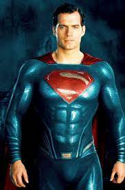
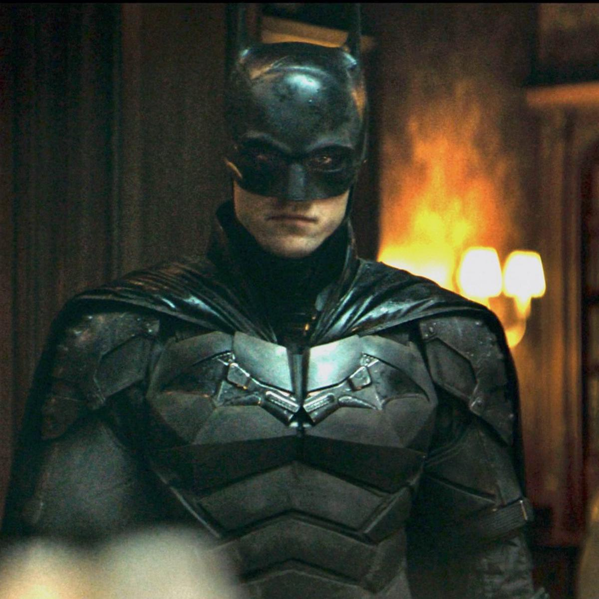
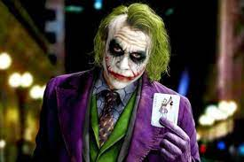
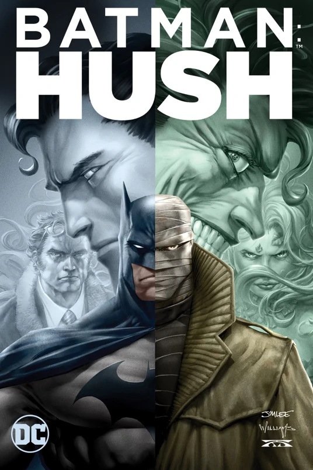
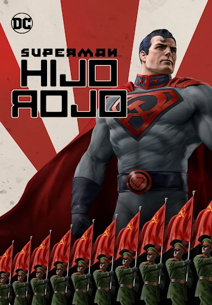
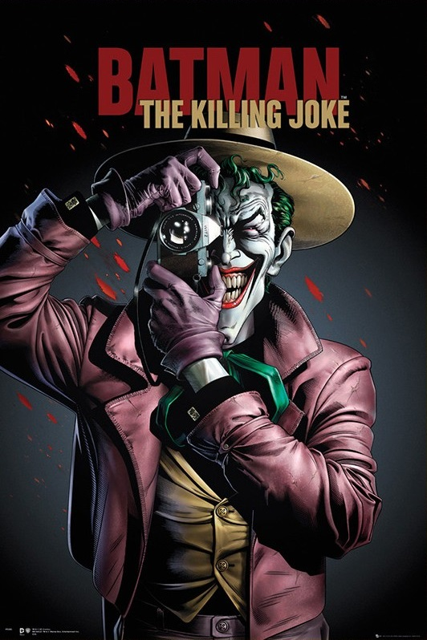

Historia de DC Comics
La editorial National Allied Publications, perteneciente al emprendedor Malcolm Wheeler-Nicholson hizo su debut editorial con una revista de tamaño tabloide titulada The Big Comic Magazine, con fecha de tapa febrero de 1935.A partir del segundo título de la editorial, New Comics (diciembre de 1935) sus publicaciones comenzaron a tener un tamaño más cercano al que iba a ser utilizado en la llamada Edad de Oro de la historieta estadounidense, un tamaño ligeramente mayor a las revistas de historietas actuales.Este último título luego pasaría a llamarse Adventure Comics, el cual continuaría hasta el número 503 en 1983, pasando a ser una de las series de más larga duración a esa fecha.
Superman
Superman (en español: Superhombre) es un superhéroe ficticio que apareció por primera vez en los cómics estadounidenses publicados por DC Comics. El personaje fue creado por el escritor estadounidense Jerry Siegel y el artista canadiense Joe Shuster en 1933 cuando ambos se encontraban viviendo en Cleveland, Ohio.

Batman
Batman (conocido inicialmente como Bat-Man y en español como el Hombre Murciélago) es un personaje de cómic creado por los estadounidenses Bob Kane y Bill Finger, y propiedad de DC Comics. Apareció por primera vez en la historia titulada «El caso del sindicato químico» de la revista Detective Comics N.º 27, lanzada por la editorial National Publications el 30 de marzo de 1939.

Joker
Joker, a veces traducido como Guasón o Comodín es un personaje creado por Bill Finger, Bob Kane y Jerry Robinson, e introducido en el primer ejemplar del comic book Batman, en abril de 1940, publicado por DC Comics. Se trata de uno de los criminales más notables de Gotham City, y es el enemigo principal de Batman

Batman Hush
Hush es una película animada estadounidense de 2019 producida por Warner Bros. Animation y distribuido por Warner Bros. Basada en la historia del cómic del mismo nombre y es la décima tercera entrega del Universo de Películas Animadas de DC y la trigésima quinta película del DC Universe Animated Original Movies. La película sigue a Batman enfrentando a una nueva amenaza que se hace llamar Hush, un enemigo que sabe todos los secretos de Batman.

Superman Red Son
es una película estadounidense de superhéroes animada directa a vídeo de 2020 que se centra en el personaje de DC Comics Superman, y la 37a entrega de la serie de películas animadas originales del Universo DC.

The Killing Joker
Con el personaje de DC Comics Batman, la película es la vigésimo sexta película del DC Universe Animated Original Movies y está basado libremente en la novela gráfica del mismo nombre de Alan Moore y Brian Bolland.
